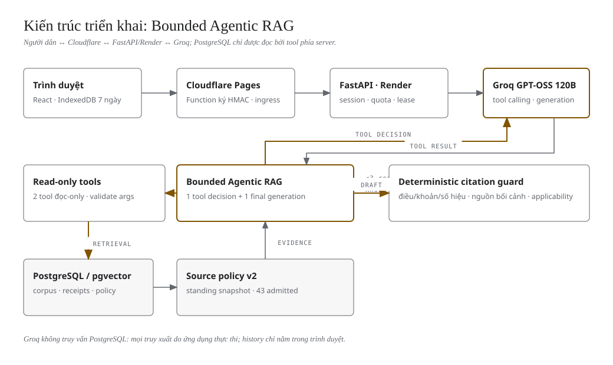

ĐỒ ÁN LIÊN NGÀNH · PHENIKAA UNIVERSITY
Hanoi Land Law
Assistant
Tra cứu nguồn pháp luật có review · Vành đai 4 Hà Nội
CANDIDATE BÀN GIAO
Source lookup only · Không sinh đáp án AI
THÔNG TIN BÌA
Sinh viên: __________ MSSV: __________
GVHD: __________ Học phần: __________
01
01 / BÀI TOÁN
Tìm được văn bản
chưa đủ để kết luận
Người dân cần hiểu điều kiện áp dụng, không chỉ một đoạn trả lời trôi chảy.
NHIỀU CẤP NGUỒN
Luật, nghị định, quy định Hà Nội và chuyển tiếp.
DỮ KIỆN QUYẾT ĐỊNH
Loại đất, giấy tờ, thời điểm phương án, việc di chuyển.
RỦI RO
Thiếu một điều kiện có thể làm hiểu sai quyền lợi.
02
02 / PHẠM VI MVP
Ba nhóm nghiệp vụ.
Một phạm vi công bố.
Ba nhóm nguồn trong phạm vi review; đọc theo đúng ngày, không suy quyền lợi của hồ sơ.
C01 · BỒI THƯỜNG
Điều kiện và hình thức; không tính tiền.
C02 · HỖ TRỢ
Các giả định đất nông nghiệp, tỷ lệ thu hồi, di chuyển.
C03 · TÁI ĐỊNH CƯ
Nhánh đất ở đã review; không cam kết suất/diện tích.
03
03 / KIẾN TRÚC
RAG giữ nguyên; demo chỉ tra cứu nguồn
Source-only dùng API/thư viện hiện có, không gọi Groq; sơ đồ mô tả kiến trúc source.

04
04 / DỮ LIỆU PHÁP LUẬT
Checksum bảo toàn phiên bản.
Review quyết định phạm vi.
60 document records / 7.396 chunks là quy mô snapshot, không phải 60 văn bản còn áp dụng.
PROVENANCE
Nguồn chính thức, locator, URL, thời điểm và checksum.
REVIEW THEO NGÀY
43 passages ngày 21/10; 22–23/10 chỉ 1 header QĐ40.
FAIL-CLOSED
Stale, unknown hoặc đã biết thay đổi không tự thành fresh.
05
05 / GROUNDING & CITATION
Nguồn tìm thấy phải còn
trong context thực gửi model.
Pipeline RAG vẫn trong source; mode nguồn chỉ hiển thị đoạn đúng receipt, checksum và ngày.
TRUY XUẤT
Hybrid lexical/vector/heading/exact + RRF.
GIỮ NGỮ CẢNH
Bảo toàn dẫn chiếu giữa khoản, chủ thể, điều kiện OR/AND.
KIỂM CHỨNG
Claim/citation theo snapshot; 1 repair; không phát draft.
06
06 / UX, PRIVACY, VẬN HÀNH
Đọc nguồn dễ hơn.
Giới hạn phải nhìn thấy.
Candidate: thư viện trích nguyên văn, chọn ngày; chat tắt và history cũ có cảnh báo.
DỮ LIỆU
IndexedDB 7 ngày; server metadata, không lưu hội thoại.
MODE AN TOÀN
Signed ingress; nguồn đúng ngày; không sinh đáp án.
GIỚI HẠN LƯỢT
6 LLM requests · 12 tools · 2 retrieval rounds · 90 giây.
07
07 / THIẾT KẾ ĐÁNH GIÁ
Đo từng lớp.
Không thay tên bằng chứng.
Cohort RAG 1697… và source-only dba69995… được tách; không chuyển kết quả giữa modes.
SOFTWARE / RETRIEVAL
Regression và gold chunks; SQLite có mẫu số riêng.
CONTEXT / CITATION
Payload thực gửi, provenance và nội dung hỗ trợ claim.
MODEL / SAFETY
Đúng đáp án, false abstention, API reliability và latency.
08
08 / KẾT QUẢ CÓ EVIDENCE
Retrieval tốt ở mẫu nhỏ.
Chưa đo accuracy đáp án.
SQLite · 19 câu · macro và micro dùng mẫu số khác nhau.
20 / 21
Gold chunks được tìm
SOFTWARE CANDIDATE MỚI
529 backend · 16 frontend · 104 Playwright local fixtures.
HẠ TẦNG CANDIDATE MỚI
PG API/restore local PASS; image 381,71 MiB dưới 512 MiB.
09
09 / PHÂN TÍCH THẤT BẠI
Giữ cả các lượt
chưa thành công.
Kết quả theo từng fingerprint; không chọn lại chỉ các ca đẹp.
S06 · FAIL
Guard chưa chấp thuận; không phát claim; không chạy lại.
C01 · INCOMPLETE
Draft bị chặn; 429 TPM, 400 JSON, budget stop.
C02 / C03
Phase 3A: NOT RUN.
C02 mới: INCOMPLETE (400 JSON).
10
10 / DEMO CÓ KIỂM CHỨNG
Trình bày điều đã đo.
Dán nhãn phần chưa đo.
Demo chính: thư viện nguồn đúng ngày; không trình đáp án generative hoặc transcript giả.
NGUỒN & LOCATOR
Ngày 21/10: 43 passages; mở nguyên văn và URL gốc.
GIỚI HẠN NGÀY
Ngày 23/10 chỉ 1 header; không gia hạn review.
CHAT ĐÃ TẮT
0 provider calls trong API acceptance; cloud chưa xác minh.
11
11 / KẾT LUẬN
MVP nhỏ, có nguồn,
khai báo đúng giới hạn.
Đã kiểm local mode tra cứu nguồn; chất lượng đáp án RAG model chưa được xác nhận.
ĐÃ KIỂM LOCAL
API SQLite/PG read-only; đúng receipt/ngày; chat tắt.
QUALITY CÒN THIẾU
C02 mới INCOMPLETE; không model-answer PASS.
PHÁT HÀNH
Full suite PASS; CI / cloud theo evidence cập nhật.
12